9d 睡眠 timer preview（v7）
真 app 截圖（v2.0.0）加上新掣。每行可以左右掃睇其他裝置。月亮掣只喺裝置本地時間 21:00–05:00 出現，timer 開緊時一直出。示範狀態：揀咗 30 分鐘，剩 23:14。
日間（05:00–21:00）：零改變
冇月亮掣，同 v2.0.0 一模一樣。
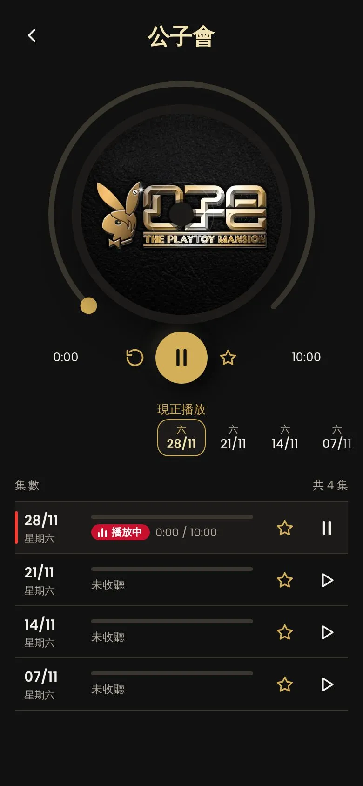

夜間：月亮掣
內頁頁頭右上（HomeView 喺清單掣左邊）；闊版主頁播放卡喺卡頭下面嗰行（指示點同一行）右邊。未開 = 線條月亮；開咗 = 實色月亮 + 剩餘分秒（例：23:14，冇底色），頁頂全闊進度條隨時間扣減；進度條同月亮都用當頁主題強調色（同播放掣同色：節目頁跟節目主題，主頁跟奶油金）。
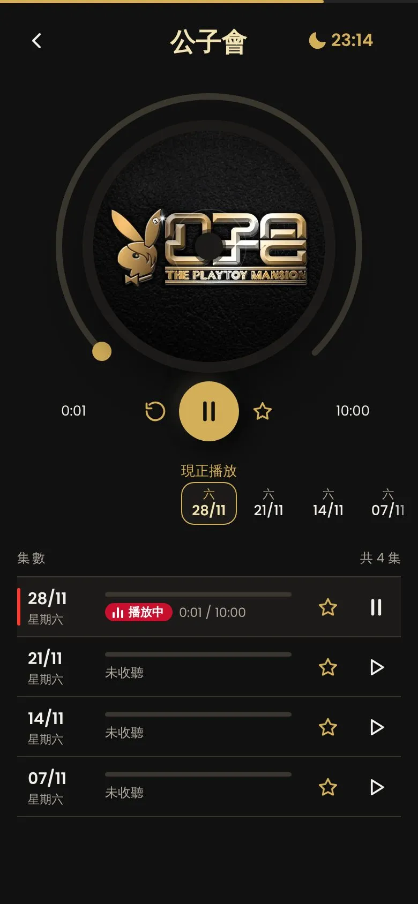
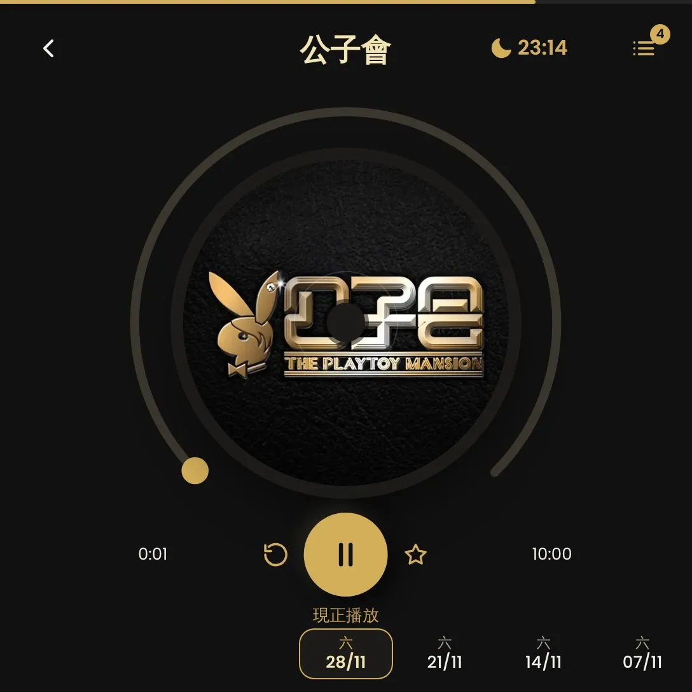
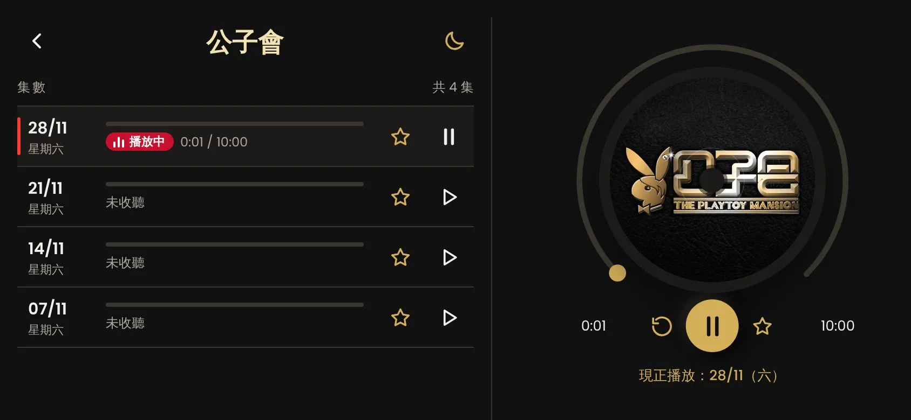
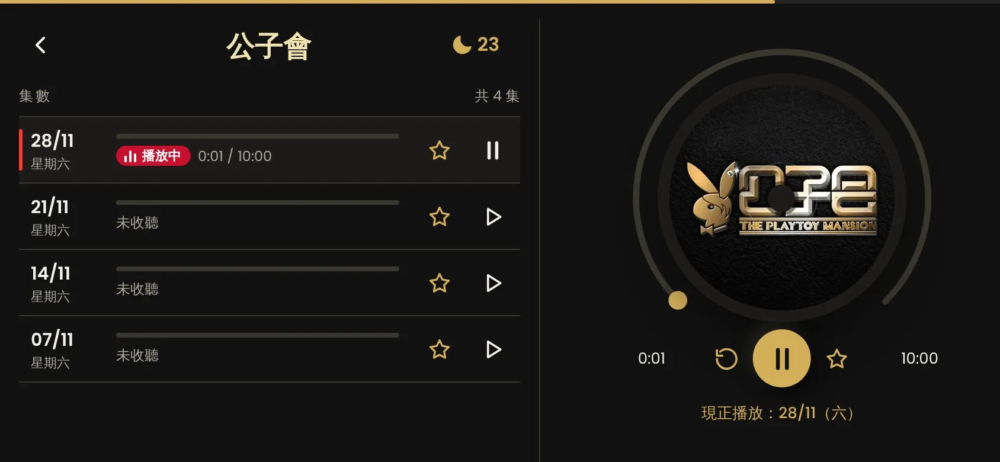
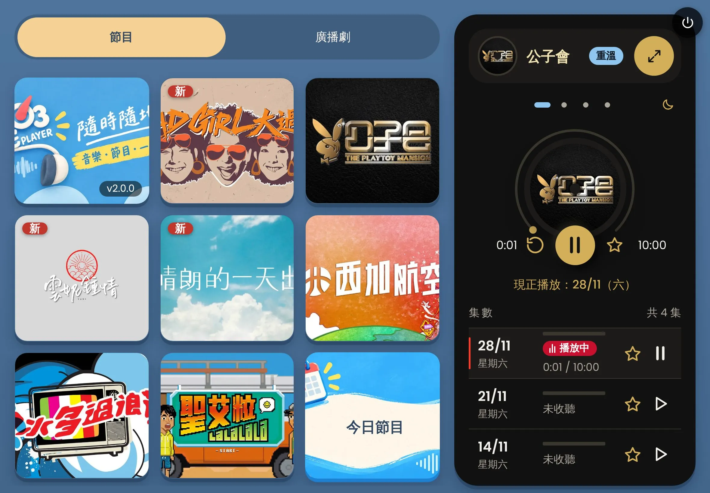
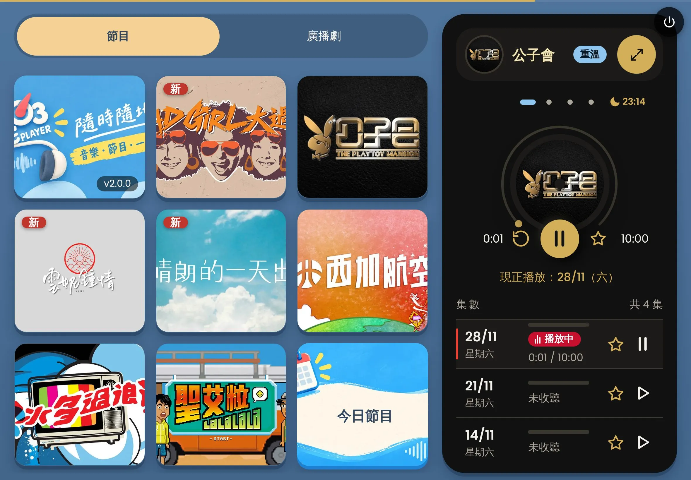
底部選單
四粒大掣 2×2：15 / 30 / 60 分鐘、播完呢集（顯示「剩餘時間：9:59」；直播變灰）。未開：上次揀嘅時長用框線 highlight，撳一下即開始。開緊：嗰粒變實色；標題右邊「剩餘 23:14｜關閉」tab 掣。平板橫：選單喺右邊播放卡位置。

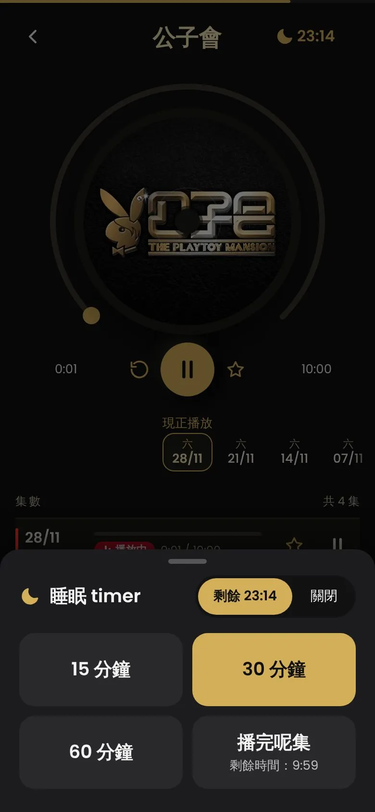


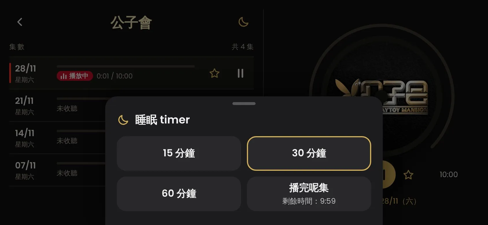
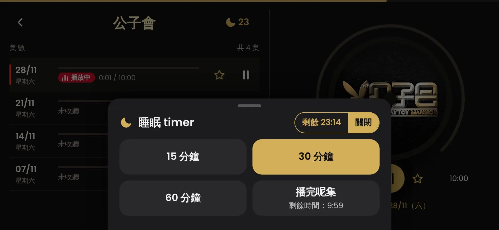

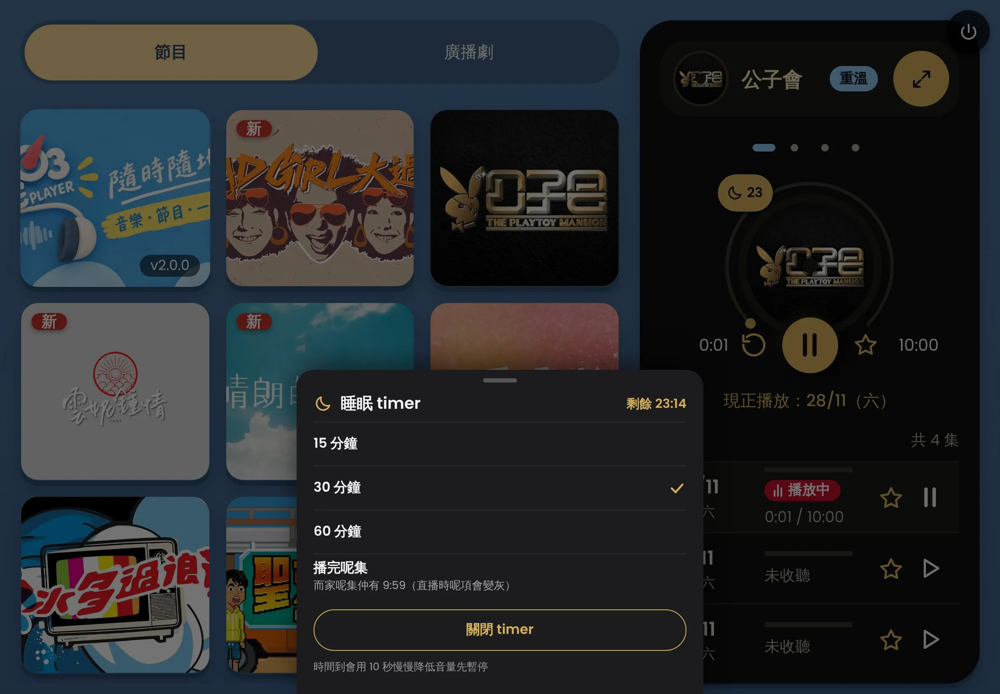
Mini player：timer 進度點顯示？（要你揀）
Mini player 底部已經係播放進度條，所以 timer 進度要第二個位。M1：同內頁一樣用頁頂全闊條；M2：mini player 頂邊一條細條；M3：月亮外圈圓環；M4：外圈包埋月亮同數字（膠囊形進度框）；M5：成張卡底色由左邊起淡強調色，時間過去由右向左縮。實作時標題 / 日期會縮窄讓位（preview 係疊上去）。


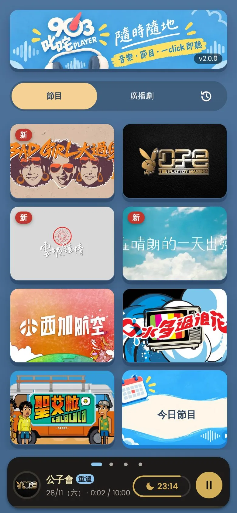
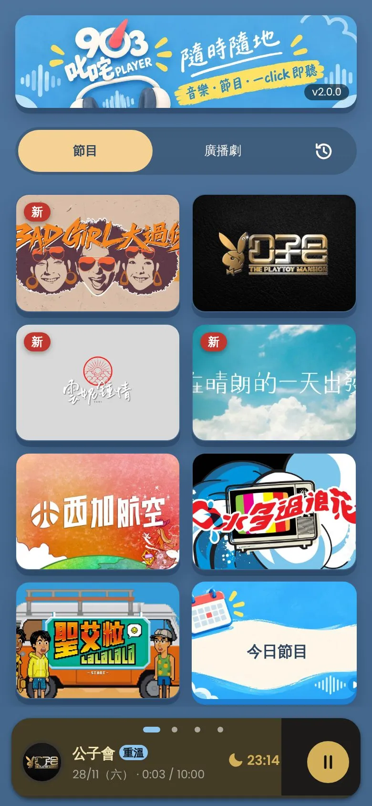
Mini player：播到 6:13 時（底部播放進度條有嘢）
同上面五個方案一樣，不過播放進度已經行到大約六成，睇吓 timer 進度同底部播放進度條擺埋一齊嘅效果。M6：timer 同播放掣整合，播放掣外圈 = timer 剩餘（由 12 點順時針縮）；M6a 左邊照出月亮 + 分秒，M6b 只喺播放掣右上角加月亮徽章、唔出數字（數字喺選單睇）。實作時播放掣會縮細少少，外圈唔會貼住卡邊。
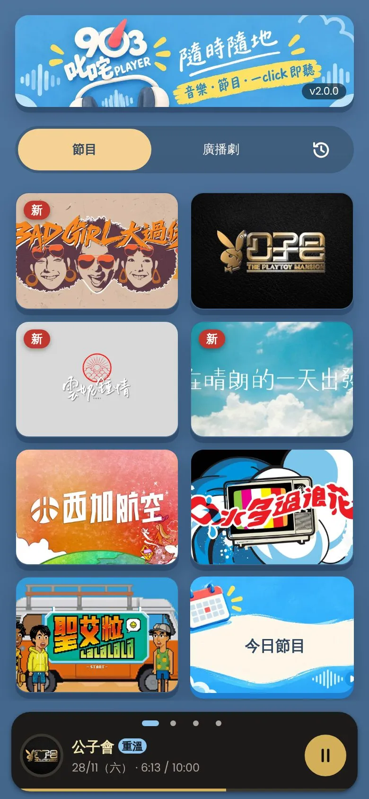
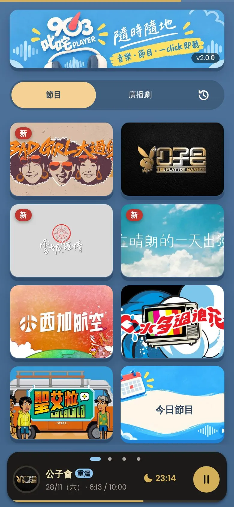
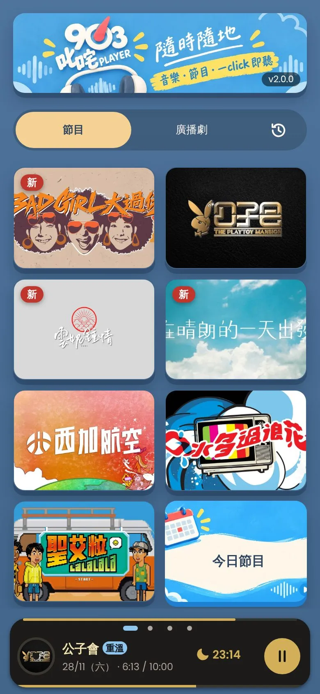
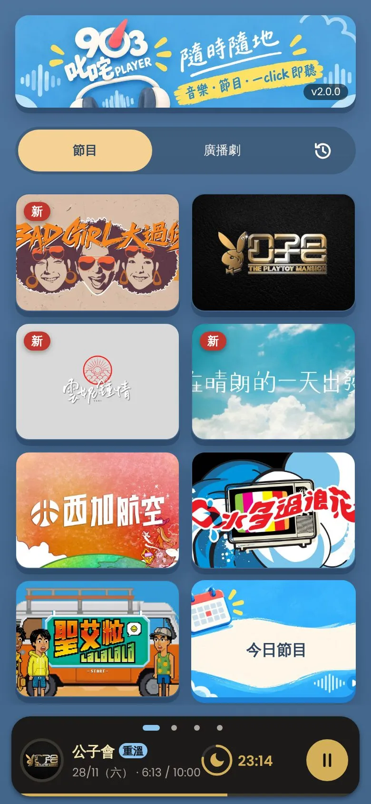
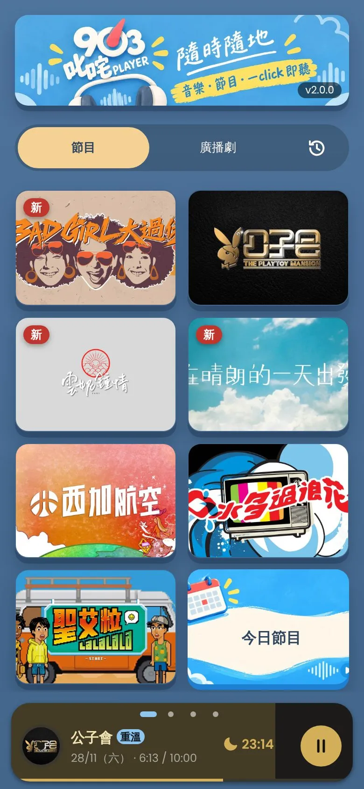
已定決定
| 項目 | 決定 |
|---|---|
| 入口 | 內頁頁頭右上 / HomeView 清單掣左邊 / 闊版播放卡指示點嗰行右邊 |
| 顯示時段 | 裝置本地時間 21:00–05:00（每分鐘檢查）；開緊 timer 一直出 |
| 開緊顯示 | 實色月亮 + 剩餘分秒；頁頂全闊進度條（當頁主題強調色） |
| 選單 | 2×2 大掣；上次時長 highlight；開緊時標題右邊「剩餘｜關閉」tab（節目｜廣播劇款）；冇說明字 |
| 選項 | 15 / 30 / 60 分鐘、播完呢集（直播灰）；唔做淡出 |
| 播完呢集 | 留喺同一集：播完先停；轉集 / 轉直播：用剩餘時間繼續計 |
| 時間到 | 直接暫停；記住上次時長；唔自動重開 |
| 暫停 / 轉節目 | 照計；一揀即計 |
| 準確度 | 絕對截止時間 + timeupdate 檢查；sessionStorage |
| e2e:visual | lane 0 先加 14:00 日間情境；日間 0 diff；22:30 只准月亮掣 / 進度條 pixel diff + mini player 標題 / 日期位置 diff |